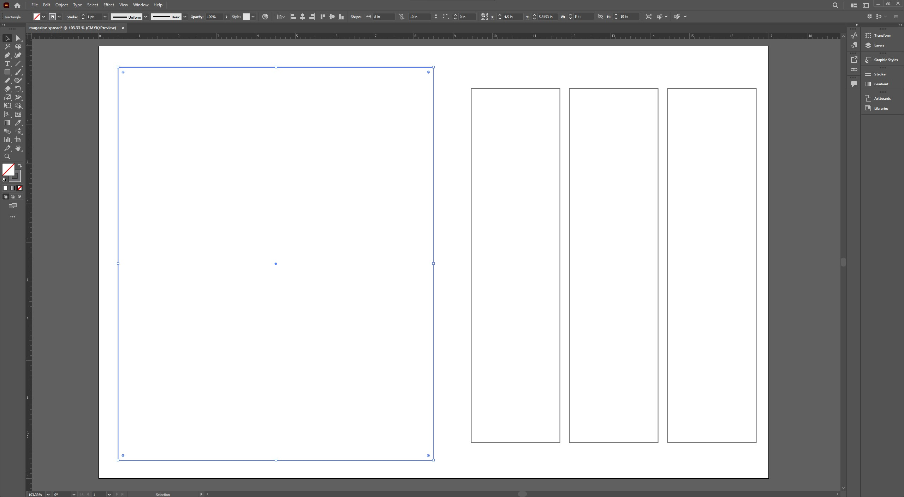
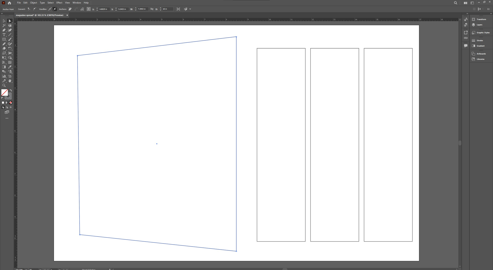
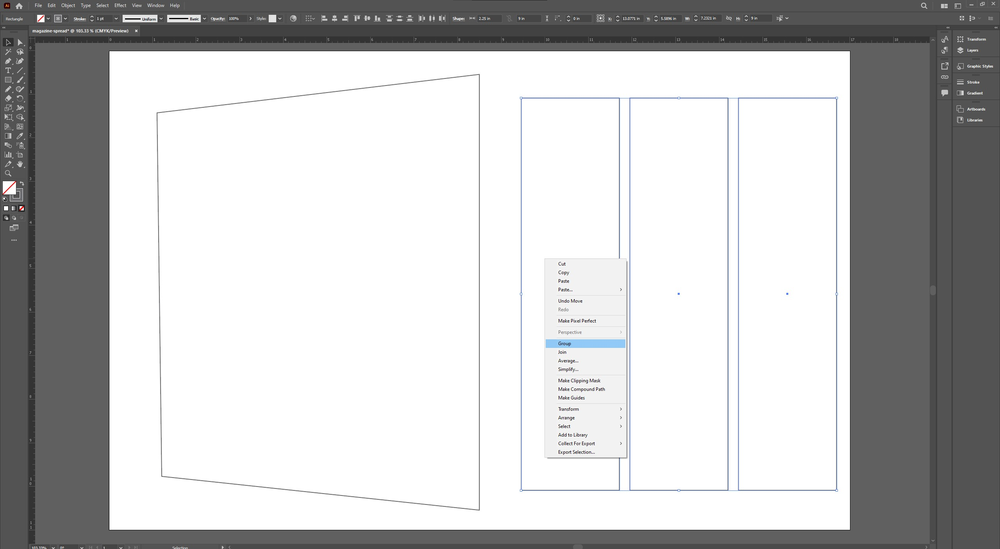

Using the Selection Tools
Why This Matters
Once you’ve added shapes to your layout, you’ll need to move things around and fine-tune the placement. Illustrator has two main selection tools that give you different levels of control. Knowing when and how to use each one is the key to working quickly and accurately.
Step 1: Use the Selection Tool to Move and Resize
Grab the black arrow tool at the top of the toolbar. This is the Selection Tool (V). Click on your photo placeholder or one of your text boxes to select it. You’ll see a bounding box with handles.
Click and drag to move the shape. To resize it, grab a corner and drag. If you want to keep the proportions, hold Shift while you resize.
You can also use the arrow keys on your keyboard for nudging things into place.
A box selected with the Selection Tool active and bounding box visible.
Step 2: Use the Direct Selection Tool to Fine-Tune Corners
Now try the white arrow tool just underneath the Selection Tool. This is called the Direct Selection Tool (A). It lets you click on a specific point of a shape and move just that part.
Click one of the corners of a rectangle. You can drag it independently, which is helpful if you want to round off just one corner or skew a shape.
This tool is super handy if you’re creating design elements that need a more custom look.
Two corners of a rectangle selected and being adjusted with the Direct Selection Tool.
Step 3: Group and Ungroup Layout Elements
If you’ve got all your text columns positioned where you want them, it’s a good idea to group them together so they don’t get out of alignment later.
Select all three by holding Shift and clicking each one. Make sure to use the Selection Tool (V). Then right-click and choose “Group.” Now they’ll move together like one object.
To ungroup them, right-click again and choose “Ungroup.”
Grouped boxes with right-click context menu open.
Next Steps
Now that your layout is perfectly organized, it’s time to bring it to life with color. In the next tutorial, we’ll look at how to pick and save colors that work well together.